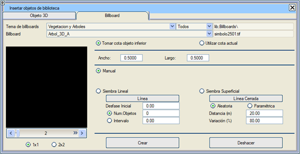

Genel Bilgiler
Bu seçenek, önceden tanımlanmış ve sınıflandırılmış 2B görüntüleri sahneye dahil etmeye ve bunları üç boyutlu nesneler olarak kullanmaya olanak tanır. Önce dahil edilmek istenen görüntü teması, ardından görüntünün kendisi ve son olarak da yerleştirme yöntemi seçilmelidir: manuel tıklama, doğrusal serpiştirme veya kapalı bir alan içine serpiştirme.
Görüntülerin sınıflandırılması, onları tanımlayan dosyaların bulunduğu klasörler aracılığıyla yapılır. Kütüphaneye, ilgili klasörlere dosyaları eklenerek yeni görüntüler eklenebilir.
2B görüntüler, billboard adı verilen dikdörtgen bir geometrinin dokusu (texture) olarak kullanılır. Bu geometrinin yatay (yatay işaretleme) veya dikey (düşey işaretleme, ağaçlar, reklam panoları) olacağı ve dikey olması durumunda, geometrinin sabit bir yönelime mi sahip olacağı (levhalar) yoksa kameraya dönük kalacak şekilde döneceği mi belirtilir.
Billboard'lar, harita üzerinde oluşturulan semboller ve hücrelerle ilişkilidir. Bunları korumak için harita ile birlikte kaydetmek gerekir. Sanal 3B'ye her girildiğinde ve haritada billboard'larla ilişkili semboller veya hücreler bulunduğunda, bu sembollere veya hücrelere karşılık gelen billboard'lar oluşturulur.
Billboard'ların, ilişkili oldukları sembollerin veya hücrelerin kendi "çizimlerinin" görüntüsünü alması sağlanabilir. Bu, işaretleme ve levhalar için çok kullanışlıdır.
Görüntülerin siyah kısımları, bir billboard'da kullanıldığında şeffaf kabul edilir.
Bu nesneler ve görüntüler olduğu gibi kullanılabilir, herhangi bir dönüşüme ihtiyaç duymazlar, ancak kullanıcının ihtiyaçlarına göre değiştirilebilirler.

Billboard Seçimi
Sınıf: eklenmek istenen görüntülerin temasını aşağıdakiler arasından seçmeyi sağlar:
-Göstergeler (bir noktayı işaretler ve bir kot veya km yazar...)
-Yatay İşaretleme (yön okları ve yol üzerine çizilmiş işaretler)
-Düşey İşaretleme (bilgi, yasaklama, tehlike, zorunluluk... bir direk ve arka kısım eklenebilir)
-Bitki Örtüsü ve Ağaçlar (otlar, çalılar ve ağaçlar).
Tip: sınıftaki görüntülerden sembollerle, hücrelerle veya her ikisiyle ilişkili olanları seçerek sahnede gösterilmesini ve yerleştirilmesini sağlar.
Mevcut elemanlar listesi:
seçilebilir tüm nesneleri içeren bir açılır liste.
İlişkili sembol veya hücre ve görüntü: bu billboard türüyle ilişkili sembol veya hücrenin dosya adı gösterilir. Kütüphaneden bir görüntü kullanılıyorsa, onu içeren dosyanın adı da eklenir.
Billboard önizleme görüntüsü:
görüntü gösterilir. 1x1, 2x2, 3x3 ve 3x5 seçenekleriyle her seferinde 1 ila 15 arasında görüntü görülebilir.
Orijinal boyut: görüntünün temsil ettiği nesnenin boyutunu bildirir.
Genişlik, Yükseklik: billboard'un boyutları, nesne ölçeklenerek değiştirilebilir.
Sahneden Z Al: billboard sahneye yerleştirilirken, kotunu üzerinde bulunduğu geometriden alır.
Mevcut Z'yi Kullan: billboard sahneye yerleştirilirken, kotunu Harita modülündeki Mevcut Kot değerinden alır.
Zemin Z'si: "Sahneden Z Al" ile aynı şekilde çalışır ancak yatay billboard'ları zemin geometrisine uyacak şekilde döndürür.
Oluşturma ve Serpiştirme
Billboard oluşturmanın varsayılan yolu "Manuel"dir, yani billboard sahneden seçilen noktada oluşturulur. Ancak menüde sunulan kriterlere göre otomatik olarak da yapılabilir.
Doğrusal Serpiştirme: billboard'ları bir çizgi boyunca yerleştirmeyi sağlar; çizgi üzerine konulacak toplam billboard sayısı veya hangi aralıklarla yerleştirileceği belirtilebilir. Ayrıca, ilk billboard'un çizginin ilk noktasına yerleştirilmemesi için bir "Başlangıç Ötelemesi" belirtilir.
Yüzeysel Serpiştirme: billboard'ların yerleştirileceği alanı belirtmek için kapalı bir çizgi kullanılır. Serpiştirme "rastgele" veya billboard'lar arasındaki mesafe ve bu ızgara düğümlerine göre konumun rastgele değişimi ile parametrelendirilen düzenli bir ızgara şeklinde olabilir.
Oluştur: bu buton, belirtilen billboard oluşturma işlemini yürütür. Oluşturma modu manuel ise, 3B görünümde her tıklandığında seçilen o noktada bir billboard oluşturulur ("Esc" tuşuna basılarak durdurulur). Her oluşturma işlemi arasında billboard tipi değiştirilebilir.
Geri Al: gerçekleştirilen son oluşturma işlemini siler.
|